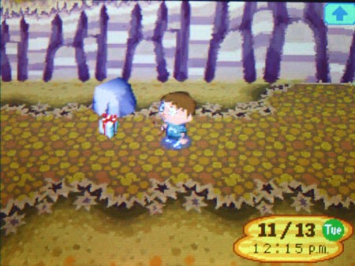
Я, наверное, простоял над этой коробкой целую вечность, хотя на самом деле прошло всего несколько часов. Темнело, по листьям пробегал холодный ветер.
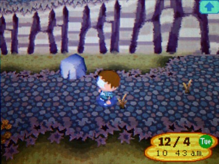
Я мучительно метался между тем, что я хотел сделать, и тем, что должен был. Это был не её почерк и не её бумага.
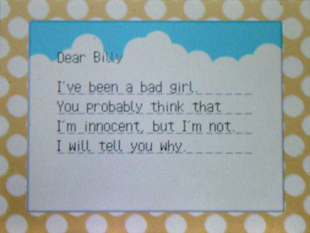
Я не был уверен, что это она вообще писала, и была ли она в принципе ещё жива. Моё воображение разыгралось, и я уже видел, что ждёт внутри: оторванные органы, отрубленная голова. Ничего хорошего там быть не могло. Это было слишком. Впервые в жизни я поступил правильно. Я не позволю Нуку обвести меня вокруг пальца.
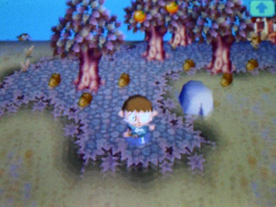
Я закрыл коробку, поднял её, стараясь не касаться дна. Ноги словно набухали, когда я спускался к воде. Я размахнулся и бросил коробку в море. Она покачалась на волнах, нырнула и исчезла. Я попрощался с Пенни. И вдруг почувствовал невероятную усталость. Я не стал строить плот. Я просто стоял на берегу и смотрел на облака.
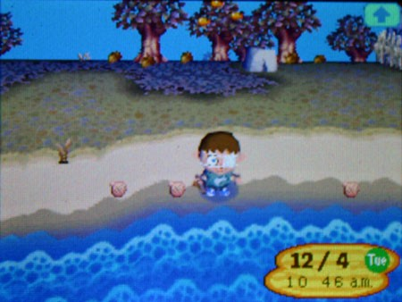
Небо в тот вечер было безоблачным, и единственное, что привлекло моё внимание, — странный гул вдалеке, но он быстро стих. Неспешно жители начали возвращаться в лагерь. Они тоже выглядели уставшими и какими-то потерянными. В ту ночь никто не проронил ни слова, и меня это полностью устраивало.
Следующие несколько дней тянулись бесконечно. Я сидел на берегу, глядя туда, где небо сливалось с водой, и думал о Пенни. Как ни пытался я думать о хорошем, в голову лезли тревожные мысли. То я представлял себе грустную девочку с мокрыми от слёз щеками, без руки, без языка — и кто знает, что ещё они могли у неё отнять. То я думал о том, как это произошло, какой ужас она испытала, когда проснулась и поняла, что её больше нет целиком. Так же, как я, когда понял, что потерял глаз. Я представлял, как она страдала и боялась — и при этом всегда оставалась той оптимистичной девочкой из писем. Она была самым смелым человеком из всех, кого я знал. А теперь она мертва. Слово «мертва» только начинало для меня что-то значить. Её больше нет. Она исчезла навсегда. Я не мог до конца осознать это. С кем мне теперь храбро сражаться?
Я снова стоял на берегу в ту ночь, и надо мной сиял месяц.
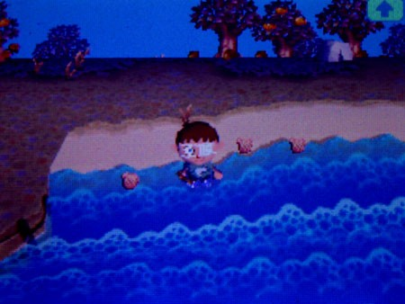
Прилив накатывал и отступал, но не издавал ни звука. Вдалеке волны распластывались, превращаясь в чёрные чернила, словно океан был сделан из застывшего масла. Передо мной море странно мерцало в лунном свете, привлекая моё внимание.
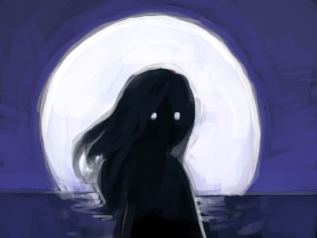
Из масляной чёрной глади вынырнула фигура — чёрное платье сливалось с темнотой. Она поплыла ко мне. Я потёр глаза, ужас пробирался под кожу, покрывая руки и шею мурашками. Фигура ускорялась, и из её сторон вытянулись руки, тянущиеся ко мне в тусклом свете. Когда она приблизилась, я разглядел её силуэт — девочка, которая неслась ко мне с нечеловеческой скоростью. Её лицо было чёрной маской, но на ней вдруг проступили губы. Я застыл, парализованный, когда безликое лицо остановилось в сантиметре от моего.
Неземным шёпотом она выдохнула: «Почему ты выбросил меня, Билли?». Голос вырвал воздух из моих лёгких, и я не мог дышать…

Я проснулся в холодном поту. Кошмар был слишком реальным. Утро только начиналось, и я медленно, с опаской спустился к воде — как будто ожидал увидеть призрак Пенни, зовущий меня в туманном свете. Но там были только волны, и я смотрел на них с подозрением. Со временем их мерный ритм заворожил меня.
Я не знал, что это — влияние гироидов или глубокая депрессия, которая въелась в меня, как паразит, но я стоял на краю небольшого обрыва и смотрел вниз, на волны, разбивающиеся о скалы, мечтая об освобождении.

Мысль о том, чтобы положить этому конец… начинала казаться правильной…
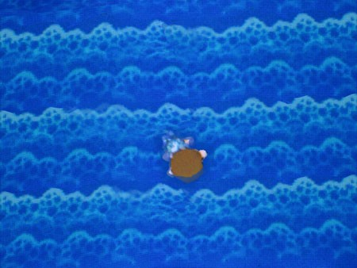
Внезапно я очутился в воде — будто кто-то дёрнул меня за ноги, и течение потащило меня в море. Я не сопротивлялся. Я смотрел в мутную глубину, не видя дальше вытянутой руки, соль жгла моё израненное лицо, пока даже боль не исчезла. Я чувствовал странное удовлетворение, представляя себя ближе к ничто, чем когда-либо. Мой взгляд становился всё темнее.
Я иду к тебе, Пенни. Я люблю тебя.

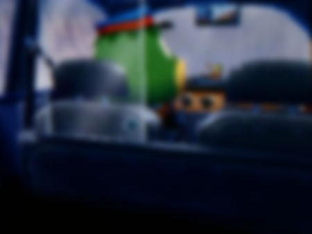
Перед глазами поплыл туман. Наверное, так и выглядит момент, когда жизнь пролетает перед глазами.
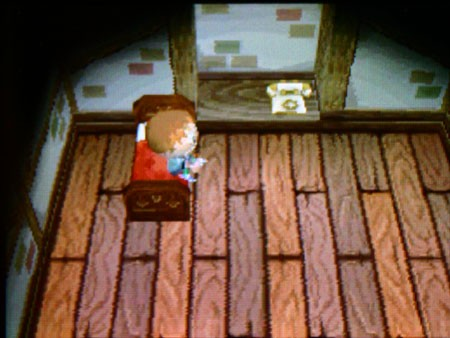
Когда я очнулся во второй раз, голова шла кругом. Мой разум прикалывался надо мной? Я внезапно перевернулся на бок и меня вырвало — из живота хлынула солёная вода. Значит, я не спал? КАКОГО ХУЯ здесь происходит? Я схватил топор и направился вниз, стремясь вернуться на берег, но внезапно меня остановил незнакомец.
Земля у моей двери взорвалась, и житель, которого я никогда раньше не видел, закричал на меня:
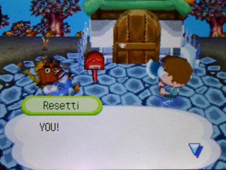
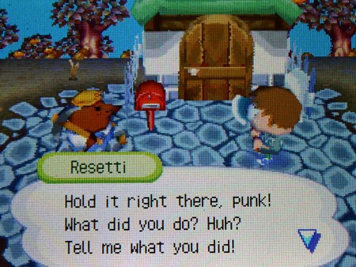
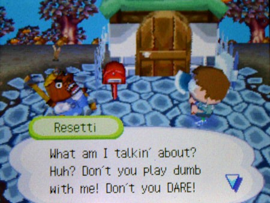
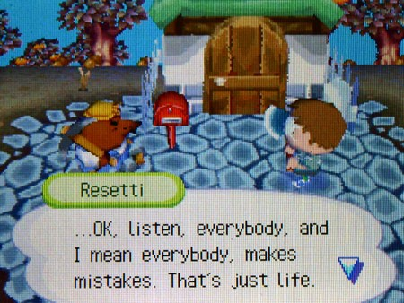
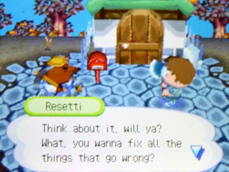
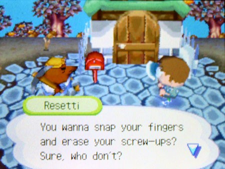
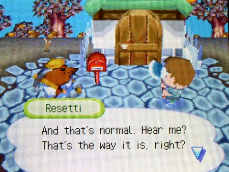
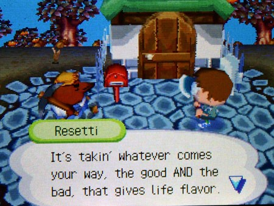
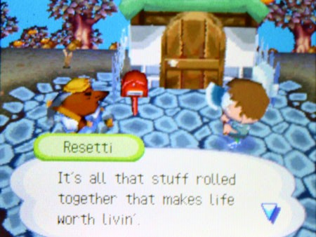
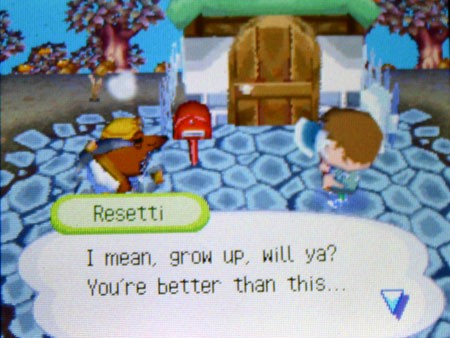
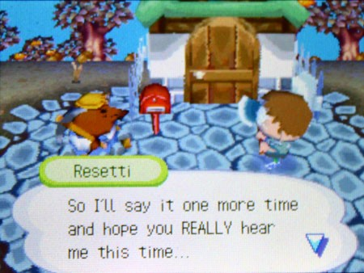
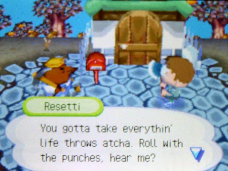
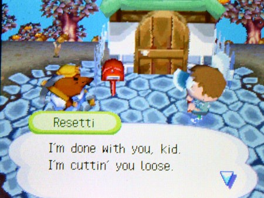
Он резко зарылся в землю и исчез, будто его здесь никогда и не было.
Спасли… спасли меня от смерти? СПАСЛИ МЕНЯ? Я ХОТЕЛ УМЕРЕТЬ?! Вот она, моя жизнь. Даже сбежать нельзя. Я один. Даже умереть не дают. Зачем? Чтобы какой-то больной ублюдок потом жрал моё изуродованное тело?
Я услышал тебя, плод моего больного воображения… Ни одной здравой мысли в голове. Вдруг я почувствовал, как по черепу прошёл странный треск — и я стал чуждым для себя. Кажется, я рехнулся. Это было даже забавно. Я хихикнул и посмотрел на топор — он сверкал на солнце, ярче, чем я помнил. Такой красивый.
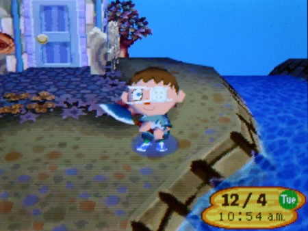
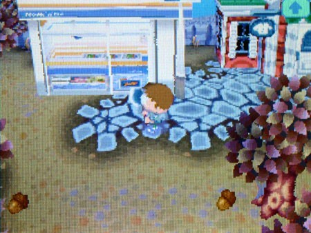
Пойду-ка я в «забегаловнуку». Я обрадовался Тому, хоть он и выглядел сегодня потешно. У него на башке была повязка. Вот чудик! Надо было познакомить его с моим новым дружком — Мистером Топором. Когда я влетел в лавку, Том что-то орал мне. По-моему, он кричал:
ПОСТОЙ, ОСТАНОВИСЬ! ДАЙ МНЕ ВСЁ ОБЪЯСНИТЬ...
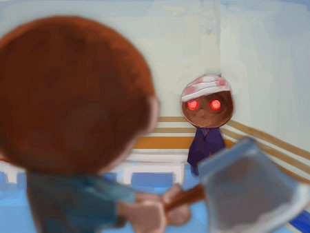
Но я знаю, что Нук — лжец, так что какая разница? Я просто хотел познакомить его с Топором. Кажется, они подружились.
Дальше помню плохо. Пришли звери, на вечеринку. Забрали Топор. Утащили Нука. Прижали меня. Не помню…
Я пишу этот рассказ, потому что она попросила. Сказала — поможет. Сделает остров лучше. Я рад помочь. У неё были хорошие новости! Я наконец вписываюсь! У нас новые псы… и они поймали того вора, что терроризировал лагерь!
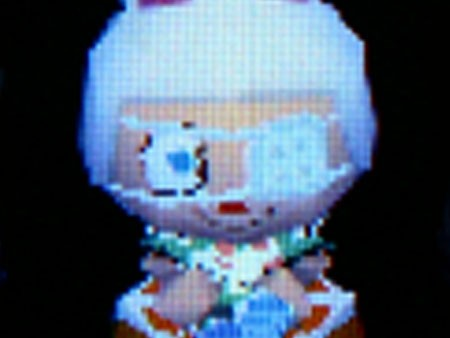
Насчёт меня можете не переживать. Сейчас я чувствую себя лучше! О, разве я вам не говорил? Я наконец-то встретился с Пенни! Она хорошая девочка.
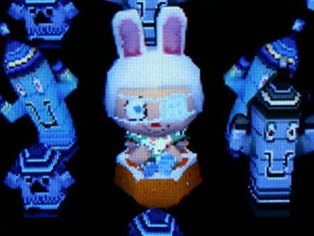
Она сказала, что нельзя обижать людей, даже лжецов, но сказала, что когда я закончу писать, она хочет, чтобы я пришёл к ней в гости на особенный праздник, только для нас. Я так рад.
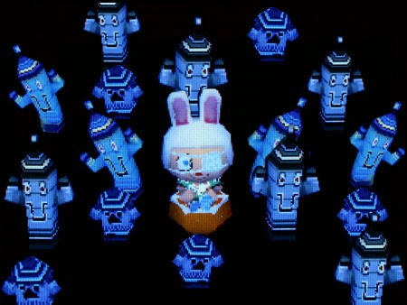
Пару дней назад она мне сказала, что к нам приедут новенькие. Не терпится их увидеть.
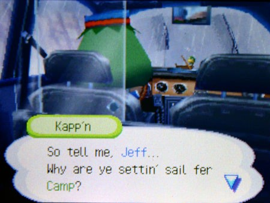
Думаю, мы станем отличными друзьями.
КОНЕЦ. ВНОВЬ